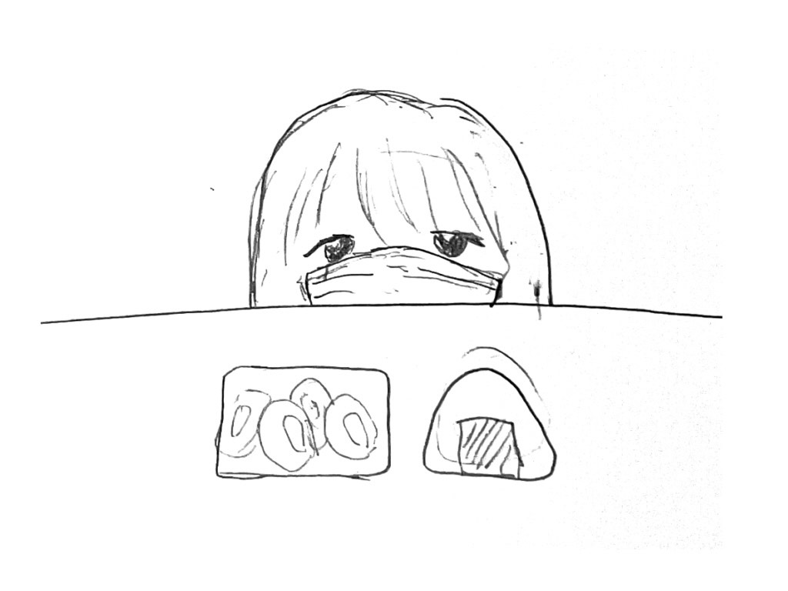

観察課題

平日夜1人で弁当屋でイカの唐揚げとおにぎりを買う小学生くらいの女の子（30代以上のお客さんが多く、子連れも滅多にいないので珍しい）
黒いゴミ箱をバッグにしている20代くらいの男性
駅前の明るい道で、片手で棒を回しながら片手で懐中電灯を持つおじいさん
お会計中に指を立てているサラリーマン
プラスチックのコインケースを使っているおじいさん
900円のお会計で1200円を出す女性
2階以上の階から1度1階までエレベーターで降り、そのまま昇る人達
夜祈りながら歩くサラリーマン